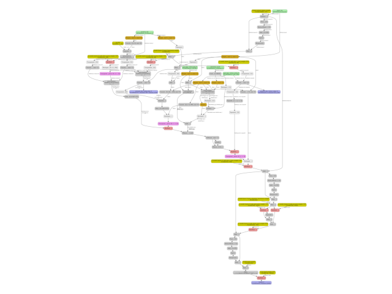

Note
Go to the end to download the full example code.
Export a LLM to ONNX with InputObserver#
This example shows how to export a HuggingFace transformers LLM to ONNX
using InputObserver.
The key challenge when exporting a LLM is that the HuggingFace examples
typically call model.generate, but we only need to export the forward
method. InputObserver
intercepts the forward calls during generation to record the actual inputs and
outputs, which are then used to infer:
the dynamic shapes (which tensor dimensions vary across calls), and
a representative set of export arguments (with empty tensors for optional inputs that were absent in some calls).
We use arnir0/Tiny-LLM — a very small causal language model — so the example runs without a GPU.
Command-line options
Run with pre-trained weights (default) or a randomly initialised model:
python plot_llm_to_onnx.py # pre-trained weights (default)
python plot_llm_to_onnx.py --no-trained # random weights — fast
python plot_llm_to_onnx.py --num-hidden-layers 2 # use only 2 transformer layers
python plot_llm_to_onnx.py --model Qwen/Qwen2-0.5B-Instruct # use a different model
When --trained is given (the default) the full checkpoint is downloaded
(~hundreds of MB) and the exported ONNX model produces meaningful text.
Pass --no-trained to build the model from the config with random weights
via transformers.AutoModelForCausalLM.from_config() — only the tokenizer
and the architecture config are downloaded (~few KB), which is useful for
quick testing and CI.
--num-hidden-layers overrides config.num_hidden_layers before the model
is instantiated, which shrinks the number of transformer decoder blocks.
This is useful for reducing memory use and export time during development.
Imports#
import argparse
import sys
import pandas
import torch
from transformers import AutoConfig, AutoModelForCausalLM, AutoTokenizer
from yobx import doc
from yobx.helpers import string_type
from yobx.helpers.rt_helper import onnx_generate
from yobx.torch import (
InputObserver,
apply_patches_for_model,
register_flattening_functions,
to_onnx,
)
Command-line arguments#
--trained / --no-trained controls whether the full pre-trained
checkpoint is loaded (default: --trained). Pass --no-trained to
build a randomly initialised model from the architecture config only (faster,
no large download, suitable for CI).
--num-hidden-layers overrides the number of transformer decoder blocks in
the config before the model is built. Use a small value (e.g. 2) to
speed up export and reduce memory during development.
--model selects the HuggingFace model ID to use (default:
arnir0/Tiny-LLM). Any transformers.AutoModelForCausalLM-compatible model
can be passed here.
_DEFAULT_MODEL = "arnir0/Tiny-LLM"
parser = argparse.ArgumentParser(description="Export a HuggingFace LLM to ONNX.")
parser.add_argument(
"--model",
default=_DEFAULT_MODEL,
metavar="MODEL_ID",
help=(
f"HuggingFace model ID to export (default: {_DEFAULT_MODEL!r}). "
"Any AutoModelForCausalLM-compatible model can be used."
),
)
parser.add_argument(
"--trained",
action=argparse.BooleanOptionalAction,
default=True,
help=(
"Load the full pre-trained weights from HuggingFace Hub (default). "
"Pass --no-trained to build a randomly initialised model from the config "
"(no weight download, suitable for CI)."
),
)
parser.add_argument(
"--num-hidden-layers",
type=int,
default=None,
metavar="LAYERS",
help=(
"Override config.num_hidden_layers to N before building the model. "
"Reduces the number of transformer decoder blocks, which lowers memory "
"use and speeds up export. Defaults to the value in the model config."
),
)
# parse_known_args avoids failures when sphinx-gallery passes extra arguments.
args, _ = parser.parse_known_args(sys.argv[1:])
Load model and tokenizer#
The tokenizer is always fetched from HuggingFace (small download).
The architecture config is fetched next; if --num-hidden-layers was given
the corresponding config attribute is overridden before the model is built.
By default the model is loaded with pre-trained weights (--trained).
Pass --no-trained to use random weights instead (much faster, no large
download).
MODEL_NAME = args.model
tokenizer = AutoTokenizer.from_pretrained(MODEL_NAME)
config = AutoConfig.from_pretrained(MODEL_NAME)
if args.num_hidden_layers is not None:
print(
f"Overriding num_hidden_layers: "
f"{config.num_hidden_layers} -> {args.num_hidden_layers}"
)
config.num_hidden_layers = args.num_hidden_layers
if args.trained:
print(f"Loading pre-trained weights for {MODEL_NAME!r} ...")
# ignore_mismatched_sizes=True is required when num_hidden_layers has been
# reduced: the checkpoint contains weights for all original layers, and
# without this flag from_pretrained would raise an error on the missing keys.
model = AutoModelForCausalLM.from_pretrained(
MODEL_NAME, config=config, ignore_mismatched_sizes=True
)
else:
print(f"Building randomly initialised model from config for {MODEL_NAME!r} ...")
model = AutoModelForCausalLM.from_config(config)
print(
f" trained={args.trained} num_hidden_layers={config.num_hidden_layers} "
f"#params={sum(p.numel() for p in model.parameters()):,}"
)
Loading pre-trained weights for 'arnir0/Tiny-LLM' ...
Loading weights: 0%| | 0/12 [00:00<?, ?it/s]
Loading weights: 100%|██████████| 12/12 [00:00<00:00, 3544.23it/s]
trained=True num_hidden_layers=1 #params=12,988,992
Device selection#
Move the model to GPU if CUDA is available so that the observation, export, and inference steps all run on the same device.
device = torch.device("cuda" if torch.cuda.is_available() else "cpu")
print(f" device={device}")
model = model.to(device)
device=cpu
Observe forward calls during generation#
InputObserver acts as a
context manager that replaces the model’s forward method. Every time
forward is called (internally by model.generate), the inputs and
outputs are recorded.
register_flattening_functions
must wrap the observation because the KV-cache
(transformers.cache_utils.DynamicCache) is a custom Python class
that needs to be registered as a pytree node before
torch.utils._pytree can flatten it.
prompt = "Continue: it rains, what should I do?"
inputs = tokenizer(prompt, return_tensors="pt")
inputs = {k: v.to(device) for k, v in inputs.items()}
observer = InputObserver()
with (
register_flattening_functions(patch_transformers=True),
apply_patches_for_model(patch_transformers=True, model=model),
observer(model),
):
model.generate(
input_ids=inputs["input_ids"],
attention_mask=inputs["attention_mask"],
do_sample=False,
max_new_tokens=10,
)
print(f"number of stored forward calls: {observer.num_obs()}")
number of stored forward calls: 3
Infer dynamic shapes and representative arguments#
After generation the observer has seen several forward calls, each with different sequence lengths and KV-cache sizes. We can now ask it to infer:
dynamic_shapes— a nested structure oftorch.export.Dimvalues describing which dimensions must be treated as dynamic during export.kwargs— one representative set of inputs that can be passed directly totorch.export.export()oryobx.torch.to_onnx().
with register_flattening_functions(patch_transformers=True):
dynamic_shapes = observer.infer_dynamic_shapes(set_batch_dimension_for=True)
kwargs = observer.infer_arguments()
print("dynamic_shapes:", dynamic_shapes)
print("kwargs:", string_type(kwargs, with_shape=True))
dynamic_shapes: {'input_ids': {0: DimHint(DYNAMIC), 1: DimHint(DYNAMIC)}, 'attention_mask': {0: DimHint(DYNAMIC), 1: DimHint(DYNAMIC)}, 'position_ids': {0: DimHint(DYNAMIC), 1: DimHint(DYNAMIC)}, 'past_key_values': [{0: DimHint(DYNAMIC), 2: DimHint(DYNAMIC)}, {0: DimHint(DYNAMIC), 2: DimHint(DYNAMIC)}], 'logits_to_keep': None}
kwargs: dict(input_ids:T7s1x13,attention_mask:T7s1x13,position_ids:T7s1x13,past_key_values:DynamicCache(key_cache=#1[T1s1x1x0x96], value_cache=#1[T1s1x1x0x96]),logits_to_keep:int)
Export to ONNX#
We now export the model. Both
register_flattening_functions
and apply_patches_for_model
must be active during export so that the exporter can correctly handle
the KV-cache type and any PyTorch ops that need patching.
filename = "plot_llm_to_onnx.onnx"
with (
register_flattening_functions(patch_transformers=True),
apply_patches_for_model(patch_torch=True, patch_transformers=True, model=model),
):
to_onnx(
model,
(),
kwargs=observer.infer_arguments(),
dynamic_shapes=observer.infer_dynamic_shapes(set_batch_dimension_for=True),
filename=filename,
)
Verify: check discrepancies#
check_discrepancies
runs every recorded set of inputs through both the original PyTorch model
and the exported ONNX model, then reports the maximum absolute difference
for each output. Values close to zero confirm that the export is correct.
data = observer.check_discrepancies(filename, progress_bar=True)
print(pandas.DataFrame(data))
0%| | 0/3 [00:00<?, ?it/s]
100%|██████████| 3/3 [00:00<00:00, 44.49it/s]
abs ... outputs_ort
0 0.000014 ... #3[T1s1x1x32000,T1s1x1x13x96,T1s1x1x13x96]
1 0.000011 ... #3[T1s1x1x32000,T1s1x1x14x96,T1s1x1x14x96]
2 0.000013 ... #3[T1s1x1x32000,T1s1x1x15x96,T1s1x1x15x96]
[3 rows x 18 columns]
Run the ONNX model in a greedy auto-regressive loop#
onnx_generate mimics
model.generate for the exported ONNX model: it feeds the present
key/value tensors back as past key/values on every decoding step.
(With random weights the output tokens will be meaningless, but the
pipeline itself is exercised end-to-end.)
onnx_tokens = onnx_generate(
filename,
input_ids=inputs["input_ids"],
attention_mask=inputs["attention_mask"],
eos_token_id=model.config.eos_token_id,
max_new_tokens=50,
)
onnx_generated_text = tokenizer.decode(onnx_tokens[0], skip_special_tokens=True)
print("-----------------")
print(onnx_generated_text)
print("-----------------")
-----------------
Continue: it rains, what should I do?
I have a lot of people who are in the world. I have a lot of people who are in the world, and I have a lot of people who are in the world. I have a lot of people who are in the world,
-----------------
Visualise the ONNX graph#
Render the exported ONNX model as a DOT graph.

Total running time of the script: (0 minutes 4.930 seconds)
Related examples